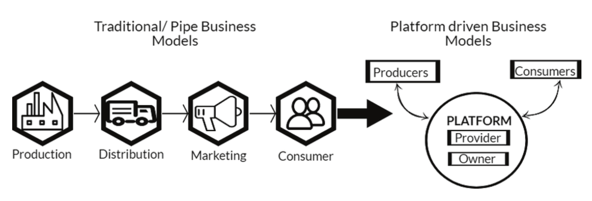
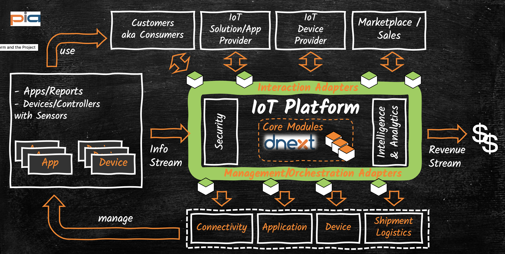
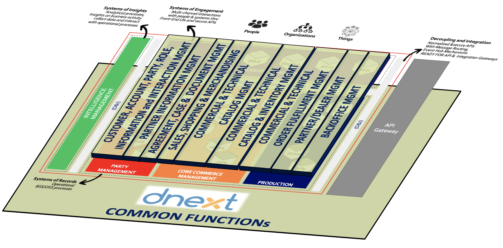

Realization of an IoT Platform using TMFORUM compliant DNext Building Blocks
Introduction
"Telecoms is at a crucial turning point. The last decade has dealt a series of punishing blows to an industry that had previously enjoyed enviable growth for more than 20 years. Services that once returned high margins are being reduced to commodities in the digital world, and our insatiable appetite for data demands continuous investment in infrastructure. On the other hand, communications service providers (CSPs) and their partners are in an excellent position to guide and capitalize on the next wave of digital revolution. The growth opportunities attached to new 5G ecosystems are estimated to be worth over $580 billion in the next decade." [1]
A quick reflection on the history, reveals a stunning fact about pace of business change: ~500years of change is LESS THAN ~50years of change is LESS THAN the last ~20years of change
- 1500s-1950s: First, Second and Third Industrial Revolutions. Cars, Planes, Television, Cameras and Plain old Telephony in our lives.
- 1950s-2000s: Start of Fourth Industrial Revolution: Internet Born, Personal Computers, Mobile Phones
- 2000s-2010s: Second wave of Fourth Industrial Revolution: High Speed Broadband Internet, ECommerce Boom, On-Demand High-Definition Content, 3G/4G Internet and Mobility Everywhere
- 2010s-NEXT: Next wave of Fourth Industrial Revolution: Cloud Computing, Big Data, Machine Learning and Artificial Intelligence based Analytics, Prediction, Internet of Things (IoT) and 5G enabling: Mobile Broadband, Massive Machine to Machine and Ultra Reliable Communication Infrastructure everywhere
Especially the following areas of technology will play a significant role and drive new digital business ecosystems:
- 5G allowing ground breaking capabilities for next generation apps and services anytime, anywhere providing three types of specialized connectivity: high-throughput broadband access (10Gbps), ultra reliable low latency networks (1ms) and massive machine type communications allowing millions of devices on a small area (1km2)
- IoT (Internet of Things) technologies allowing many different types of appliances, devices and items connected to the global Internet
- SDN (Software Defined Networking) / NFV (Network Function Virtualization) / Cloud technologies allowing intent based fully controllable networks, virtual infrastructures that can be dynamically scaled, load-balanced across disperse geographical locations and distributed physical infrastructures; all of which making it possible to dynamically orchestrate, on-the-fly deploy and scale the entire lifecycle of apps and network functions accessible anywhere, anytime
- Blockchain technology allowing digital contracts (Smart Contracts) revolutionizing both identity and trust management
For the Telecom Operators or CSPs that want to capitalize on IoT business utilizing the advantages made possible through the 5G infrastructure investments, this whitepaper describes a possible revolutionary BSS/OSS (Business and Operational Support Systems) transformation by realizing an IoT Platform via TMFORUM ODA compliant modules of DNext; The Next Generation, Cloud based, Digital Customer Experience Platform by PiA.
The Platform and Platform Business
In a nutshell, a platform business is “a business based on enabling value-creating interactions between external producers and consumers. The platform provides an open, participative infrastructure for these interactions and sets governance conditions for them. The platform’s overarching purpose to consummate matches among users and facilitate the exchange of goods, services, or social currency, thereby enabling value creation for all participants.” [2]

Figure-1: Traditional Pipeline vs Platform Business
Similar to applying a dependency inversion principle for utmost flexibility to software systems, the main idea is to break the linear chain of traditional pipeline and insert in between well defined interfaces implemented by the Platform that facilitate standardized mechanisms for exchange of goods and/or services between multiple producers and consumers.
Thus, similar to Amazon, the Platform Owner (such as Telco Operator) can expose product offerings it doesn't own or produce, can provide inventory, common catalog facilities, as well as omni-channel sales UIs, can vet and measure performances of solution partners, collecting quality and/or KPI data with other metrics resulting in enhanced customer experiences for consumers and faster time-to-market for its partners.
IoT Business
The Internet of Things (IoT) describes the network of physical objects “things”—that are embedded with sensors, software, and other technologies for the purpose of connecting and exchanging valuable data with other devices and systems over the internet.
IoT is a perfect business use case enforcing the Platform Business, since from a Telco Operator's perspective, there are many partners at play incorporating and the Operator has to sell products/solutions that it does NOT own or produce. Some of the players (including but not limited to) are; Device Manufacturers, SIM Manufacturers, Network/Connectivity Providers (aka Telco Operators), IoT Application Providers, Logistics/Shipment Providers, Distriubutors etc.
IoT Platform realized with Dnext in the Core
Below diagram depicts a conceptual view of the IoT Platform enabled via Dnext components in the core.
- The Northbound constitutes the set of experience and engagement APIs and processes of the IoT Platform for managing the Customer experience and interactions of the Business Partners to freely onboard their solutions, APIs such as; Onboarding Devices, placing Orders, Searching Product and/or Resource Inventories etc.
- The Southbound constitutes the set of managed and orchestrated aspects of the IoT Platform for enabling the IoT Solutions, such as; Connectivity, Backing Applications, Devices and Shipment.
- The Eastbound is the Info Stream flowing from all internal processes, App PLatforms and Devices that make it possible for value-added Intelligence and Analytics
- The Westbound is the Revenue Stream made possible via the IoT Platform that enables the Operator to capitalize on IoT Offerings of its partners and be able to sell IoT Solutions that it does not directly own or produce
- Cloud Native, TMFORUM Open API compliant, standardized DNext micro-services constitute the IoT Platform Core Modules that allow seperation of business policies and external interfaces (managed by Adapters) from transactional components of implementation (DNext Modules), resulting in a flexible, easy to maintain and scale low OPEX system.

Thus, One IoT Platform, but means many to many:
- For the Sales-UI/Market Place => It is Order Management
- For the IoT Solution/Device Suppliers => It is Inventory Mgmt and SOlution Onboarding
- For the Logistics/Shipment Partner => It is Procurement/Distribution dispatcher
- For the IoT Solution backing Application Provider => It is License Management (License Type, Capacity etc.)
- For the Operator/Platform Owner
- Product/Service Catalog
- Resource/Device Catalog
- Product/Device Inventory
- Sales and Order Management System
- Order Fulfillment, Activation/Provisioning System
- Logistics/Shipment/Just in Time Manufactiring Orchestrator
- Analytics/Intelligence Platform
DNext in the Core of IoT Platform
DNext is the Next Generation, Cloud based, Digital Customer Experience Platform by PiA that conforms the TMFORUM Open APIs and Open Digital Architecture.

Compliant to TMFORUM Open Digital Architecture, DNext Modules are packaged as container images the de facto ready-to run deployment units of modern cloud native applications and expose their capabilities via TMFORUM Open APIs compliant http-REST web services (aka micro-services).
Logically, the modules can be grouped as the following:
- Systems of Engagement: DNext Modules of this group are mainly Web UI modules that focus on managing experience and interactions. Some examples of DNext Modules utilized for IoT Platform are: Catalog Management UIs, Customer/Account Management UIs
- Systems of Records: DNext Modules of this group mainly focus on realizing operational processes of real world. This Group can be further logically grouped into three sub groups:
- Party Management: DNext Modules of this group utilized in IoT Platform focus on managing Party, Party Roles, Customer and Agreement Information.
- Core Commerce Management: DNext Modules of this group utilized in IoT Platform focus on managing Sales, Product Catalog and Catalog driven Order Fulfillment as well as orchestration of Shipment and Product Inventory Management.
- Production: DNext Modules of this group utilized in IoT Platform focus on managing the lower levels of ho products are realized, such as Resource Catalog Management, Resource Order Management as well as Resource Inventory Management,
- Systems of Insights: All Dnext Modules follow a standardized component anatomy, enabling standardized LOGs, metrics, KPIS informations as well as supporting notification and messaging services. Thus, rather than enforcing a single solution, it becomes possible to easily integrate with any Analytics, Log Management and Monitoring system. The result is an IoT Platform that provides insights on business activities, and supports actionable analytics.
The result is an on/off premise custom, yet standardized, cloud-native flexible IoT Platform that can realize the enterprise's business policies as required, meanwhile still benefiting via utilizing on industry standard and proven TMFORUM open API compliant components of PiA's DNext.